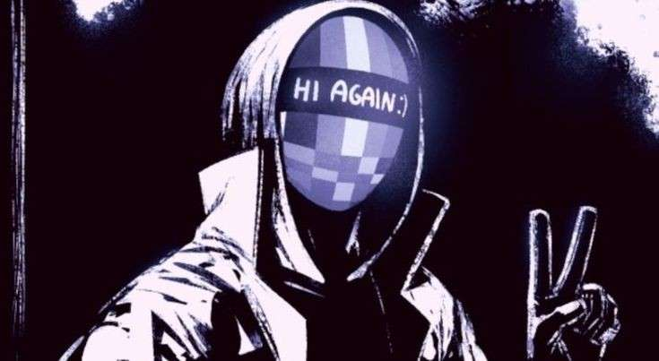

Lista de Procurados
Prosssiga com cuidado ao ver qualquer um desse indivíduos,eles não terão piedade de você, então não tenha com eles.

Codenome: Enigma
Categoria: Terrorista
Facção:"Resistência"
O que fazer: ALERTE IMEDIATAMENTE AS AUTORIDADES, O RISCO É GRANDE DEMAIS
Informações Adicionais: Se ele disser algo, pare, escute, e repita as exatas mesmas palavras para qualquer autoridade presente, seus Enigmas são confusos, porém precisamos da maior quantidade de Informações possiveís, senão algo pior pode acontecer